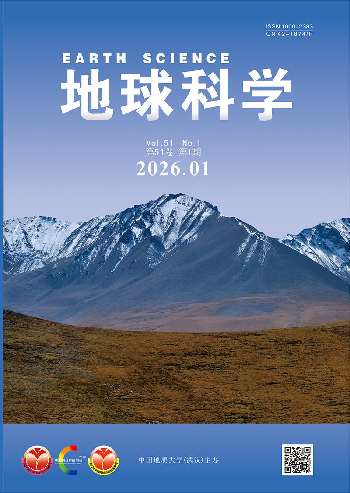
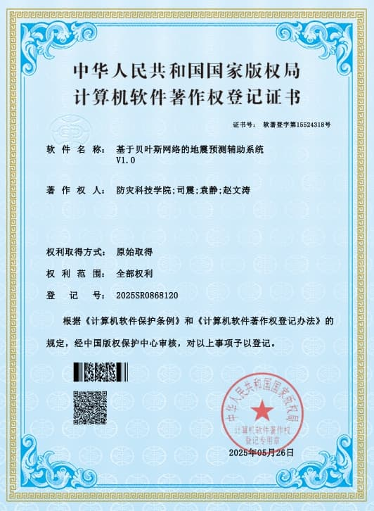
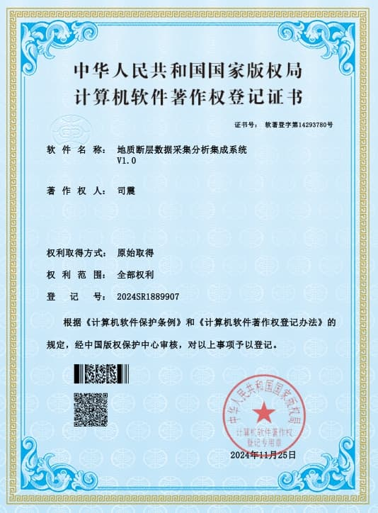

从训练微调到部署推理，从知识构建到智能体系统，全栈AI工程能力。
熟悉Transformer架构、LoRA/PEFT微调流程，具备LangGraph工作流编排与Agent开发经验，能完成Tool Calling、Function Calling及复杂业务流程自动化设计。
熟悉Embedding、向量检索、Rerank及混合检索策略，具备知识库构建、问答链路设计与多模态RAG开发经验。
熟悉ONNX模型导出及量化流程，具备Hailo-8、RK3588等边缘设备部署经验，能够完成模型压缩、推理加速与服务化部署。
熟悉Python开发，掌握Flask、FastAPI、MySQL、Redis、Docker、Linux等技术栈，具备AI应用开发与生产环境部署经验。
熟悉XGBoost、随机森林、贝叶斯网络等机器学习算法，具备时序预测、分类建模、模型评估及数据分析经验。
发表SCI一区Top及EI期刊论文，提出SOTA级算法优化方案，具备扎实的学术研究与论文写作能力。
从算法研究到工程落地，持续深耕AI领域。
项目：12345社情通
项目：新疆5G网联无人机智慧林草防火监测
项目：数据专家(Datist)
项目：工业文档智能解析与问答平台
发表SCI一区Top及EI期刊论文，提出SOTA级算法优化方案。
Expert Systems with Applications
提出ESSAP拓扑学习算法，SOTA，速度提升7-28倍


登记号：2025SR0868120

登记号：2024SR1899907
覆盖智慧城市、地震预测、工业智能等多个领域的AI落地实践。
联通（河南）产业互联网有限公司 | 智慧城市军团
面向基层社会治理与12345热线场景，构建集多模态消息接入、大模型事件分类、舆情智能监测与治理报告自动生成于一体的AI应用平台。
联通（河南）产业互联网有限公司 | 智慧城市军团
针对新疆林区草原防火难题，输出联通5G网联低空无人机+AI大模型一体化智慧解决方案，覆盖空域审批、设备维保、巡检追溯等10+核心业务场景。
中国地震局地球物理研究所(北京求索数智)
基于DAG拓扑编排的AI Agent低代码开发平台，实现模型、工具与工作流的可视化编排和快速部署。
中国地震局地球物理研究所(北京求索数智)
面向复杂业务场景构建AI决策辅助平台，实现模型管理、知识管理、多模型协同推理与报告自动生成。
北京仝睿科技有限公司
构建集文档解析、多模态理解、知识检索与智能问答于一体的AI应用平台，实现图文混排文档理解与关键信息抽取。